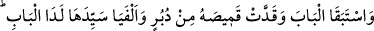
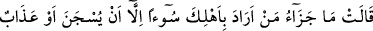
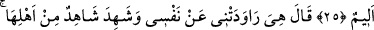
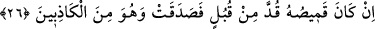
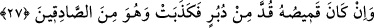
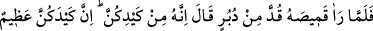
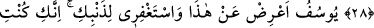
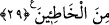
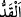
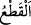

GÖMLEK NEREDEN YIRTILMIŞ?
25. İkisi de kapıya doğru koştu. Kadın Yûsuf’un gömleğini arkadan yırttı. Kapının
yanında kadının kocasına rastladılar. Kadın: “Senin ailene kötülük yapmak
isteyenin cezası, zindana atılmaktan veya elem verici bir işkenceden başka bir şey
değildir!” dedi.”
26. Yûsuf: “Asıl o benim nefsimden murâd almak istedi!” dedi. Kadının ailesinden
birisi şöyle şahitlik etti: “Eğer Yûsuf’un gömleği önden yırtılmışsa, kadın doğru
söylemiştir, o ise yalancılardandır.”
27.
“Eğer
gömleği
arkadan
yırtılmışsa,
kadın
yalancıdır,
o
doğru
söyleyenlerdendir.”
28. (Kadının kocası Yûsuf’un gömleğinin) arkadan yırtılmış olduğunu görünce
(kadına): “Şüphesiz bu, sizin tuzağınızdır. Sizin tuzağınız gerçekten büyüktür.”
dedi.
29. “Ey Yûsuf! Sen bundan (olanları söylemekten) uzak dur. (Ey kadın!) Sen de
günahının affını dile! Çünkü sen günahkârlardan oldun.”
“İkisi de kapıya doğru koştu.” Buradaki kapı, cümle kapısı olduğu içindir ki daha
önce kapılar şeklinde çoğul sıygası kullanılırken burada tekil sıygası kullanılmıştır.
Yûsuf’un koşması, Züleyhâ’dan kaçmak içindi. Züleyhâ’nın koşması ise onun kapıyı
açıp çıkmasını engellemek içindi.
“Kadın Yûsuf ’un gömleğini arkadan yırttı.” Yani gömleği Yûsuf’un arkasından çekti
gömlek de uzunlamasına iki parçaya ayrıldı. Buna “” denir. Enine ikiye ayırmaya ise
“” denir.
“Kapının” cümle kapısının “yanında kadının” içeri girmek üzere gelen ya da